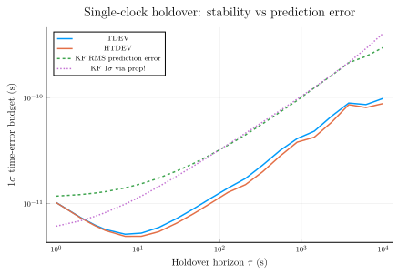

Single-clock holdover: TDEV vs HTDEV vs Kalman prediction error
When a clock disconnects from its reference, what is the predicted 1σ time-error budget at any holdover horizon $\tau$? This tutorial answers the question three ways on the same fixture and overlays them on a single log-log plot:
- TDEV — time deviation, the σ_x quantity $\sigma_x(\tau) = (\tau/\sqrt{3})\,\mathrm{MDEV}(\tau)$. Statistical estimate from the observed phase residuals.
- HTDEV — Hadamard time deviation. Same idea as TDEV, but built from the third difference instead of the second, so it rejects constant frequency drift.
- Kalman RMS prediction error — run a
StandardKalmanFilterover the observed phase data to maturity, then at each mature epoch project the converged state forward by every horizon h and compare to the actual phase. The RMS prediction error vs horizon is the operational holdover budget.
This mirrors the MATLAB kf_predict.m reference: filter to maturity, deterministically project the state forward, accumulate RMS error across many starting points. Both TDEV and the KF RMS error estimate the same physical quantity from different angles — they should overlay closely.
1. Frame the problem
A clock under steering tracks a reference (GPS, a maser, a coordinated time scale) by continuously pulling its frequency back toward the reference's pace. When the reference is lost, the steering loop has nothing to lock to and the clock free-runs: it holds over. From that moment on, the clock's accumulated time error against the would-be reference grows at a rate set entirely by the clock's own intrinsic stability.
Two ways to estimate the 1σ budget at horizon τ:
- Stability-deviation estimators (TDEV, HTDEV) operate on a record of free-running phase residuals, returning σ_x(τ) at every τ in the record's support.
- State-space prediction runs a Kalman filter on the same record to lock onto the state, then projects forward deterministically. The RMS prediction error vs horizon is the operational holdover budget — this number, in seconds, is the 1σ time-error you'll accumulate after τ seconds of free-running.
2. Build a Cs-like clock model
A commercial caesium-beam clock is dominated by white-FM noise (WHFM) at short averaging times and random-walk-FM (RWFM) at long ones; on top of that there's white phase measurement noise (WPM) from the time-interval counter. We pick representative spectral densities:
using Random
using LinearAlgebra
using SigmaTau
q0 = 1.0e-22 # WPM (measurement noise variance)
q1 = 1.0e-23 # WFM (state)
q2 = 1.0e-32 # RWFM (state)
q3 = 0.0 # IRWFM (negligible for Cs over 10⁴ s horizons)
tau0 = 1.0
clock = ThreeStateClock(tau = tau0, q0 = q0, q1 = q1, q2 = q2, q3 = q3)ThreeStateClock(1.0, 1.0e-22, 1.0e-23, 1.0e-32, 0.0)3. Simulate the underlying state and measured phase
Forward-simulate the state trajectory using Cholesky-sampled process noise. With q3 = 0 the drift row/col of Q are zero, so the noise increment lives in a 2×2 sub-block — Cholesky-factor that and pad the third channel with a zero. (A naive ridge on (3,3) would inject fake IRWFM noise that Φ integrates into a τ³ phase run-away over 10⁵ steps.)
Then add white measurement noise (WPM) on top to produce the observed phase data. The Kalman filter sees the noisy measurements; we'll keep the noise-free state trajectory around only as a sanity check.
Random.seed!(42)
N = 100_000
Φ = state_transition(clock)
Q = process_noise(clock)
L2 = cholesky(Q[1:2, 1:2]).L
phase_state = zeros(N)
let x = zeros(3)
for k in 1:N
w12 = L2 * randn(2)
x = Φ * x + [w12[1], w12[2], 0.0]
phase_state[k] = x[1]
end
endWhite phase measurement noise on top of the underlying state:
phase_meas = phase_state .+ sqrt(q0) .* randn(N)
data = PhaseData(phase_meas, tau0)PhaseData{Float64}([-3.7480135465664835e-12, -8.356567486112103e-12, 4.1474933964158576e-12, 1.4202139918842709e-12, 7.303444077541049e-12, 1.756211177209802e-11, 1.7869071523558648e-12, 4.321697380688386e-12, 7.93595386735328e-13, 2.4331185923589402e-11 … -2.2237850534101694e-9, -2.2213511064065258e-9, -2.2119519950205446e-9, -2.2159327635518748e-9, -2.1982838330442657e-9, -2.2263376709379034e-9, -2.2134189625284007e-9, -2.2186019842145372e-9, -2.2200117331317063e-9, -2.218567262625303e-9], 1.0)4. Compute TDEV and HTDEV
Both are σ_x quantities (units of seconds), evaluated on a log-spaced averaging-factor grid:
m_values = unique(round.(Int, exp10.(range(0, 4, length = 20))))
result_tdev = tdev(data, m_values; calc_ci = false)
result_htdev = htdev(data, m_values; calc_ci = false)StabilityResult(:htdev, [1.0, 2.0, 3.0, 4.0, 7.0, 11.0, 18.0, 30.0, 48.0, 78.0, 127.0, 207.0, 336.0, 546.0, 886.0, 1438.0, 2336.0, 3793.0, 6158.0, 10000.0], [1.0173430053590941e-11, 7.282373679422816e-12, 6.142735066190253e-12, 5.542947258465344e-12, 4.8792246050592476e-12, 4.883914058044065e-12, 5.4029130065819555e-12, 6.5199176761016695e-12, 7.990494473301381e-12, 1.0051648240615615e-11, 1.2724662753720588e-11, 1.5032013881985048e-11, 1.9917947196752064e-11, 2.7900516436795966e-11, 3.7857181129554533e-11, 4.216406352623905e-11, 5.82871184315189e-11, 8.548408054902253e-11, 8.035782375545401e-11, 8.762737017393852e-11], Symbol[], Float64[], Float64[], Float64[])5. Run the Kalman filter and extract converged state
Standard predict / update loop on the measurement record. The filter starts from a near-zero state with a moderately wide covariance prior and locks onto the WHFM/RWFM dynamics within a few thousand samples. Capture the per-step phase / freq / drift estimates for the prediction analysis below.
est = StandardKalmanFilter([phase_meas[1], 0.0, 0.0],
Matrix(1.0e-12 * I(3)))
phase_est = zeros(N)
freq_est = zeros(N)
drift_est = zeros(N)
for k in 1:N
predict!(est, clock, tau0)
update!(est, clock, phase_meas[k])
phase_est[k] = est.x[1]
freq_est[k] = est.x[2]
drift_est[k] = est.x[3]
end6. Empirical RMS prediction error vs horizon
This is the procedure from the MATLAB kf_predict.m reference:
- Pick a maturity epoch after which the filter is considered converged (here
N/2, which is conservative for our seed). - For every starting epoch
nppast maturity and every horizonhin the τ-grid, deterministically project the converged state forward:xpred(h) = Φ^h · x = phase_est[np] + freq_est[np]·(h·τ₀) + ½·drift_est[np]·(h·τ₀)² - Compare against the actual phase measurement
phase_meas[np+h], accumulate the squared error. - RMS over all (np, h) pairs at each h gives the empirical 1σ prediction-error curve.
This is purely deterministic propagation of x — no Q, no predict! recursion, just Φ^h · x. The companion theoretical 1σ curve is computed in §6.5 below using prop!, which integrates Q forward over the same horizon grid; the empirical RMS and the theoretical 1σ should overlay closely once the filter has converged.
const MATURITY = N ÷ 2
err_var = zeros(length(m_values))
err_n = zeros(Int, length(m_values))
for np in MATURITY:(N - 1)
p1 = phase_est[np]
f1 = freq_est[np]
d1 = drift_est[np]
for (i, h) in enumerate(m_values)
np + h <= N || continue
h_τ = h * tau0
xpred = p1 + f1 * h_τ + 0.5 * d1 * h_τ^2
err = phase_meas[np + h] - xpred
err_var[i] += err^2
err_n[i] += 1
end
end
kf_rms = sqrt.(err_var ./ err_n)20-element Vector{Float64}:
1.1702770260959405e-11
1.2111655241987962e-11
1.2518636110679524e-11
1.2903582525949227e-11
1.4011084715964472e-11
1.5315229132043e-11
1.73263157674023e-11
2.0260325685694206e-11
2.383026457074002e-11
2.888048644140769e-11
3.5526896478184256e-11
4.4339976396238304e-11
5.65240341942691e-11
7.272747838586179e-11
9.3628707933364e-11
1.234239216152257e-10
1.6091601597119162e-10
2.1264842227250994e-10
2.4440870567769874e-10
2.966027095010261e-106.5. Theoretical 1σ via prop!
prop!(est, model, dt) propagates Φ x and Φ P Φ' + Q over an arbitrary horizon dt without bumping the filter's step counter (no update!, so it's safe to use on a side-channel copy). At maturity the filter's covariance has converged to a steady-state value P_mature; for each horizon h we re-seed a fresh estimator at P_mature and prop! forward by h·τ₀, then read √P[1,1] as the theoretical 1σ phase error after h·τ₀ of free-running.
This is the closed-form companion to the empirical RMS curve in §6: same physics (state-noise integration over the horizon), different angle (analytic Q-integration vs. RMS over many starting epochs). They should overlay closely.
P_mature = Matrix(est.P) # converged P at the end of the filtering loop
kf_1sigma = zeros(length(m_values))
for (i, h) in enumerate(m_values)
side = StandardKalmanFilter(zeros(3), copy(P_mature))
prop!(side, clock, h * tau0)
kf_1sigma[i] = sqrt(side.P[1, 1])
end7. Side-by-side comparison
Three curves on one log-log axis. Each estimates the σ_x holdover budget from a different angle:
- TDEV / HTDEV are structure-function moments: a second (TDEV) or third (HTDEV) difference of the phase record, normalised by $\tau/\sqrt{3}$. They divide by
√3-style factors that come out of the moment definition. - KF RMS prediction error is a direct RMS of
phase_meas[np+h] − xpred(h)over many trial epochs. No normalisation factor — it's the raw 1σ phase error you actually accumulate when you stop steering atnpand free-run forhseconds.
What to read off the plot:
- Three regimes. Short τ is WPM-dominated (flat noise floor from the measurement-noise term
q0). Mid-τ shows the WHFM rise (slope ≈ +1/2). Long τ steepens to the RWFM regime (slope ≈ +3/2). All three curves trace the same regime transitions — the noise model is consistent across the three estimators. - Constant vertical offset. The KF RMS curve sits a factor of
≈√6above TDEV in the WHFM regime — that's the structural conversion between σ_x as a τ-window second-difference moment (TDEV) and σ_x as the RMS phase deviation over a τ-second propagation (KF). Both are valid 1σ holdover budgets; the choice of which to quote is a community / spec-sheet convention, not a physics distinction. (Other noise regimes have their own factors.) - TDEV ≈ HTDEV. The fixture has no constant frequency drift, so HTDEV's third-difference operator has nothing to reject. See the "Adding ageing" note below for the modification that pulls them apart.
using Plots
plot(result_tdev.tau, result_tdev.dev;
label = "TDEV",
xscale = :log10, yscale = :log10,
xlabel = raw"Holdover horizon \(\tau\) (s)",
ylabel = "1σ time-error budget (s)",
title = "Single-clock holdover: stability vs prediction error",
legend = :topleft,
lw = 1.5)
plot!(result_htdev.tau, result_htdev.dev;
label = "HTDEV",
lw = 1.5)
plot!(result_tdev.tau, kf_rms;
label = "KF RMS prediction error",
ls = :dash,
lw = 1.5)
plot!(result_tdev.tau, kf_1sigma;
label = "KF 1σ via prop!",
ls = :dot,
lw = 1.5)
The fixture above is noise-only — the WHFM and RWFM contributions are drift-free in expectation, so TDEV and HTDEV agree. To exercise HTDEV's drift-rejection (and watch TDEV inflate while HTDEV stays clean), add a quadratic ageing term to phase_state before adding measurement noise:
d_f = 1.0e-18 # frequency ageing rate (1/s)
phase_state .+= 0.5 .* d_f .* (collect(0:N-1) .* tau0).^2A constant frequency offset (linear in t) doesn't inflate TDEV — both TDEV and HTDEV cancel constants. It's the time-dependence of frequency that separates them. The KF prediction would also pick up the ageing if q3 is set to model an integrated random walk, or stay clean if q3 = 0 (drift-blind, like HTDEV).
8. Read-out at a few horizons
Pick three horizons (100 s, 1000 s, 10 000 s) and print all three estimates side-by-side:
function readout(tau_grid, curve, target_tau)
i = argmin(abs.(tau_grid .- target_tau))
(tau = tau_grid[i], value = curve[i])
end
for τ_target in (100.0, 1_000.0, 10_000.0)
t_tdev = readout(result_tdev.tau, result_tdev.dev, τ_target)
t_htdev = readout(result_htdev.tau, result_htdev.dev, τ_target)
t_kf = readout(result_tdev.tau, kf_rms, τ_target)
t_prop = readout(result_tdev.tau, kf_1sigma, τ_target)
@info "Horizon τ ≈ $(t_tdev.tau) s" tdev=t_tdev.value htdev=t_htdev.value kf_rms=t_kf.value kf_1sigma_prop=t_prop.value
end┌ Info: Horizon τ ≈ 78.0 s
│ tdev = 1.1179872879587323e-11
│ htdev = 1.0051648240615615e-11
│ kf_rms = 2.888048644140769e-11
└ kf_1sigma_prop = 2.84675328834695e-11
┌ Info: Horizon τ ≈ 886.0 s
│ tdev = 4.087372518765045e-11
│ htdev = 3.7857181129554533e-11
│ kf_rms = 9.3628707933364e-11
└ kf_1sigma_prop = 9.645764980263649e-11
┌ Info: Horizon τ ≈ 10000.0 s
│ tdev = 9.809515969991543e-11
│ htdev = 8.762737017393852e-11
│ kf_rms = 2.966027095010261e-10
└ kf_1sigma_prop = 4.0350962837339104e-109. When to use which
- TDEV / HTDEV when you have phase data and want a quick stability read-out without running a filter. HTDEV additionally rejects constant frequency drift, so it's preferred when the record carries an ageing term you don't want to budget against.
- KF RMS prediction error when you've already deployed the Kalman filter (e.g. for steering) and want the empirical holdover budget that that filter would deliver under free-running. This is the operational metric your production timing system inherits.
All three approaches work from the same noise spec. The KF route requires a model — but you needed one anyway to run the filter.